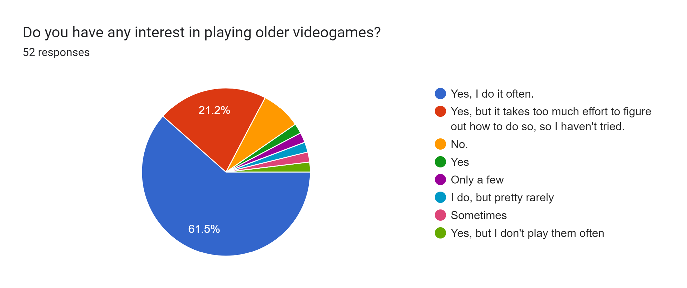
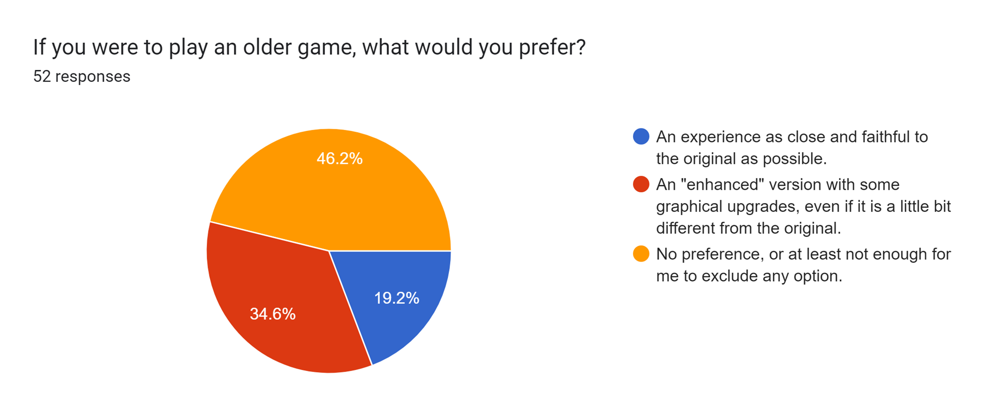
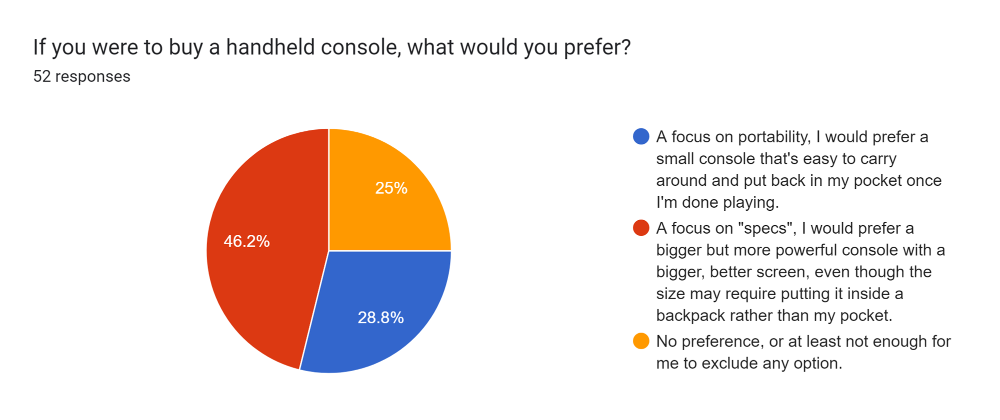
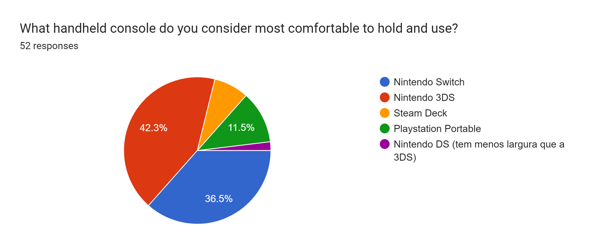

Inquiry Information:
Why do an inquiry?
An inquiry was made about our possible clients to assess certain things about our project like what to do and not to do as well as features our possible clients would like to see in our product.
How and where was the inquiry made?
Our inquiry was made online through Google Forms and you can still fill and
check out the inquiry here.
We sent our inquiry to some friends and a few gaming related discord servers.
Inquiry Data:
Quick Response:
As of the time of writing, we got 52 responses and gathered the following from quick response questions:




Long Response:
About the long response questions we learned the following:
- People LOVE long battery life on their console;
- People like the feeling of freedom (🦅) of wireless controllers;
- People like good joysticks, specially ones that don't drift.